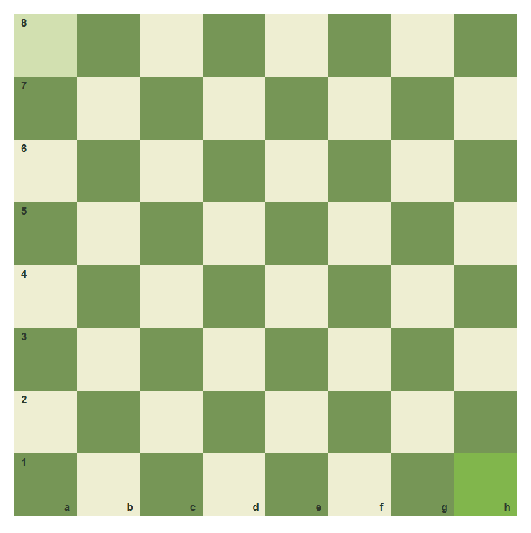
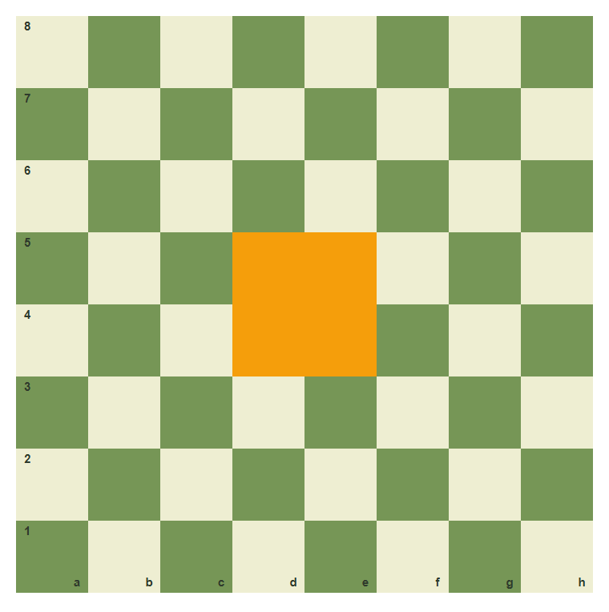
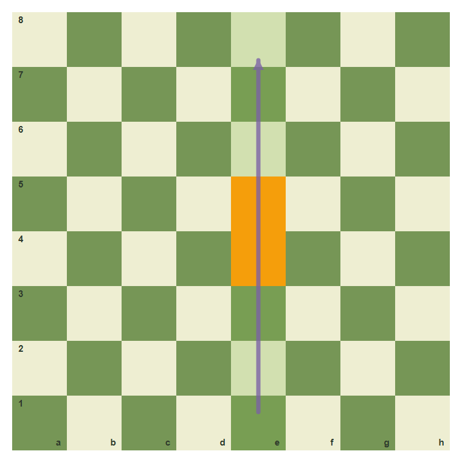
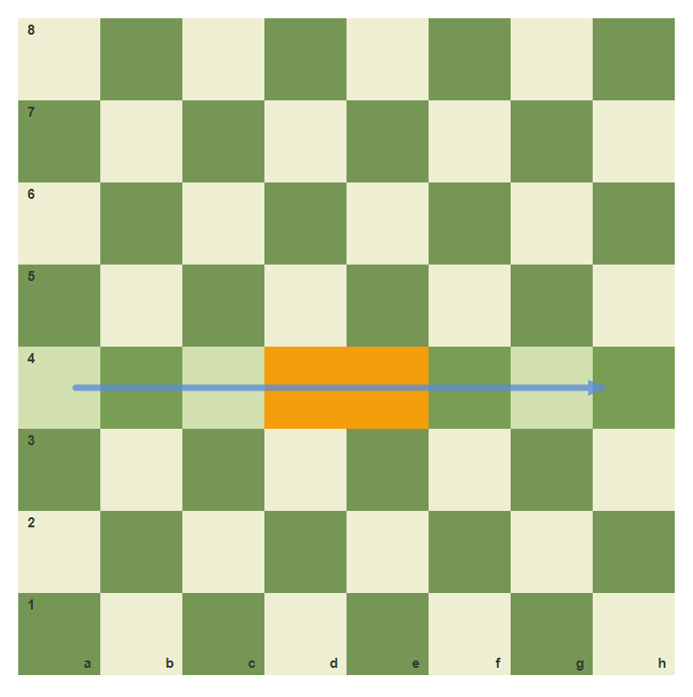
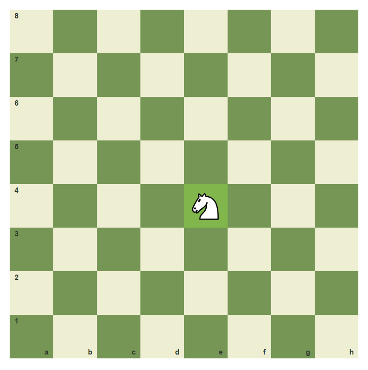
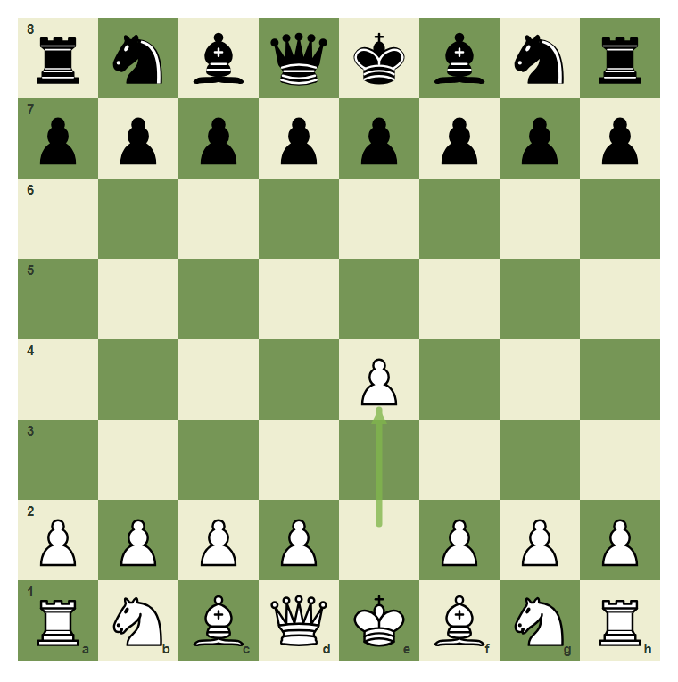
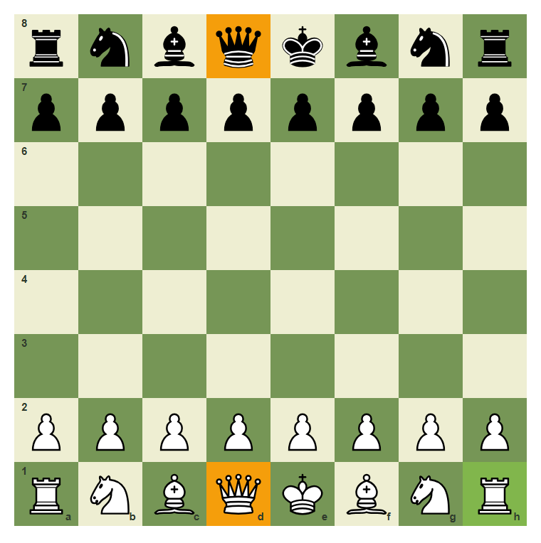

Board Coordinates And The First Map
Before pieces make sense, the board must become a map.
- Recognize the correct board orientation.
- Name files, ranks, and coordinates.
- Read a move as from-square to to-square.
- Play 1.e4 from the starting position.
The Board Is A Map
A chessboard is not only 64 squares. It is a map. Strong players do not say "move this pawn up two." They say e2 to e4 because the square names let everyone see the same position in their mind.
In this chapter, you will learn the board language that every later lesson will use.
The empty board

Correct setup starts with a light square on White's bottom-right corner: h1.
The four center squares

The center squares d4, e4, d5, and e5 are marked because later your pieces will fight for them.
Files, Ranks, And Square Names
The vertical columns are files. They are named a through h from White's left to White's right.
The horizontal rows are ranks. They are numbered 1 through 8 from White's side toward Black's side.
A square name is file plus rank. The square e4 means the e-file and the 4th rank.
The e-file

Every square in this column starts with e: e1, e2, e3, and so on.
The 4th rank

Every square in this row ends with 4: a4, b4, c4, d4, e4, f4, g4, h4.
A piece on e4

The knight is on e4: e-file, 4th rank. Say it aloud before moving on.
A Move Has Two Squares
A written move often starts with two coordinates: the square the piece leaves and the square it lands on.
For example, e2e4 means: take the piece on e2 and move it to e4. In a normal starting position, that piece is White's king pawn.
Before 1.e4

The arrow shows the pawn's first move: e2 to e4.
Play e2 to e4
Move the pawn from e2 to e4. Use the coordinates, not guesswork.
The board after 1.e4

After e2e4, the pawn leaves e2 and stands on e4. The move also opens lines for White's queen and bishop.
Common Mistake: Trusting The Picture, Not The Coordinates
Wrong board orientation ruins every square name
If the board is rotated incorrectly in real life, every coordinate becomes unreliable. The simple check is: light square on the right for White. Then queens start on their own color: White queen on d1, Black queen on d8.

h1 is the orientation check. d1 and d8 show the queen-on-own-color rule.
Checkpoint: name the square
A knight is placed on the e-file and the 4th rank. What square is it on?
Chapter Checkpoint
Which square is White's bottom-right corner?
With White at the bottom, the bottom-right corner is:
How do you read e2e4?
The move e2e4 means: